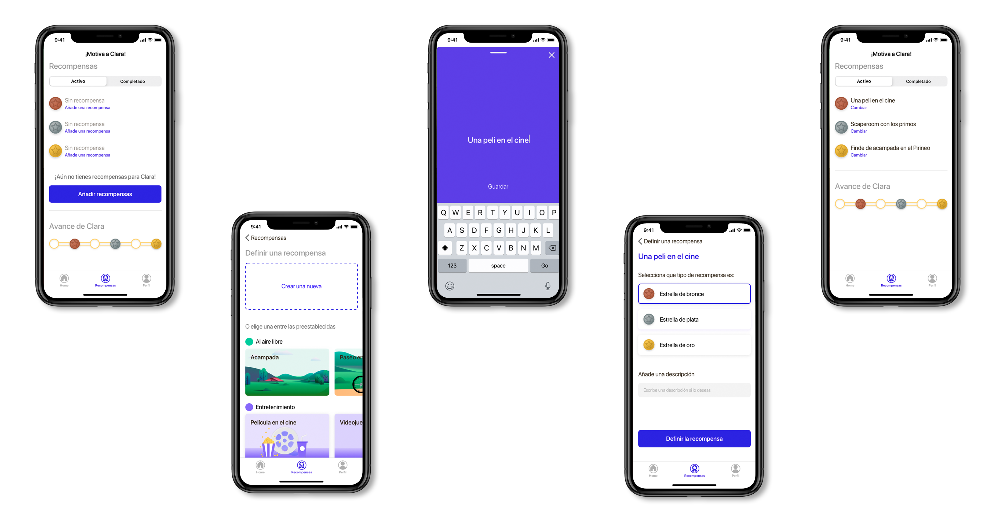
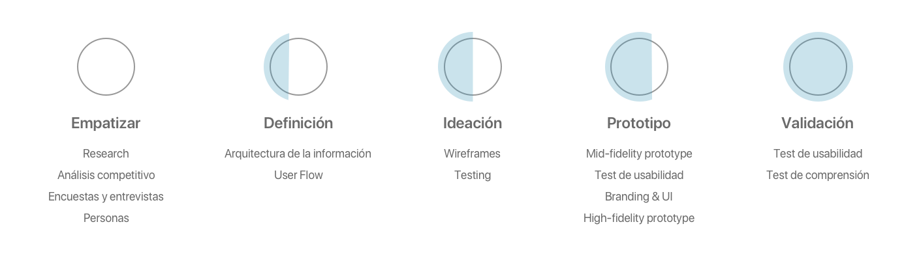

<!DOCTYPE html>
<html lang="en"></html>

<head>
    <meta charset="utf-8" />
    <title>Case Study - Art&amp;kids</title>
    <meta content="Case Study - Art&amp;kids" property="og:title" />
    <meta content="width=device-width, initial-scale=1" name="viewport" />
    <meta content="Webflow" name="generator" />
    <link href="./css/style.css"
        rel="stylesheet" type="text/css" />
    <script src="https://ajax.googleapis.com/ajax/libs/webfont/1.6.26/webfont.js" type="text/javascript"></script>
    <script
        type="text/javascript">WebFont.load({ google: { families: ["Montserrat:100,100italic,200,200italic,300,300italic,400,400italic,500,500italic,600,600italic,700,700italic,800,800italic,900,900italic"] } });</script>
    <!--[if lt IE 9]><script src="https://cdnjs.cloudflare.com/ajax/libs/html5shiv/3.7.3/html5shiv.min.js" type="text/javascript"></script><![endif]-->
    <script
        type="text/javascript">!function (o, c) { var n = c.documentElement, t = " w-mod-"; n.className += t + "js", ("ontouchstart" in o || o.DocumentTouch && c instanceof DocumentTouch) && (n.className += t + "touch") }(window, document);</script>
    <link href="./img/5e1896c118096113f58b1343_img-web32.png"
        rel="shortcut icon" type="image/x-icon" />
    <link href="./img/5e1896c52047f6412d1a6b2e_img-web.png"
        rel="apple-touch-icon" />

        <style>
            .w-webflow-badge{
                display: none !important;
            }
            .navigation-items{
            background-color: transparent !important;
        }
        </style>
</head>

<body>
    <div data-collapse="medium" data-animation="default" data-duration="400" id="navigation-home"
        class="navigation-oscuro w-nav">
        <div class="navigation-items">
            <div class="navigation-wrap">
                <nav role="navigation" class="navigation-items w-nav-menu"><a href="./index.html"
                        class="navigation-item w-nav-link">PORTFOLIO</a><a href="./about.html"
                        class="navigation-item w-nav-link">SOBRE MI</a></nav>
                <div class="menu-button w-nav-button"></div>
            </div>
        </div>
    </div>
    <div></div>
    <div class="section">
        <div class="container">
            <div class="w-layout-grid project-description-grid">
                <div id="w-node-ee63d52fd223-3973e43a" class="div-block-11">
                    <div class="position-name-text">Gamificación para acercar el mundo del arte a los niños</div>
                    <div class="paragraph-light cc-position-name">Experiencia de usuario<br />Interfaz de
                        usuario<br />Branding</div>
                    <div class="paragraph-tiny cc-paragraph-tiny-light">2 semanas<br /></div>
                </div>
                <div id="w-node-f0238024ca45-3973e43a" class="div-block-4">
                    <div class="text-block">El reto</div>
                    <div class="paragraph-light">En primer lugar, motivar a los niños a ir a actividades culturales
                        relacionadas con el arte.<br />Por otro lado, conseguir que los padres se sientan cómodos yendo
                        con sus hijos a ese tipo de espacios.</div>
                    <div class="text-block">La solución</div>
                    <div class="paragraph-light">Acercar el mundo del arte a los niños mediante un sistema de
                        gamificación que consiste en que los niños consigan pinceles participando en retos y desafíos de
                        museos, exposiciones de arte, etc… para conseguir unas recompensas personalizadas por parte de
                        los padres en base a los gustos del niños.</div>
                </div>
            </div>
        </div>
    </div>
    <div class="div-block-5">
        <div class="text-block-2">2 perfiles</div>
        <div class="paragraph-light cc-position-name">Uno para el adulto y otro para el niño. Con posibilidad de usarse
            desde el mismo dispositivo o dispositivos diferentes.</div>
    </div>
    <div class="section"></div>
    <div class="div-block-5">
        <div class="text-block-2">Personalización</div>
        <div class="paragraph-light cc-position-name">El adulto define las recompensas en función de los gustos del
            niño.</div>
    </div>
    <div class="section"></div>
    <div class="div-block-5">
        <div class="text-block-2">Retos semanales</div>
        <div class="paragraph-light cc-position-name">Motiva a los niños participando en los diferentes retos semanales
            en casa para crearle inquietud hacia el arte. Participando en el reto semanal conseguirá pinceles que podrá
            canjear por las recompensas, cuando desde el perfil del adulto se confirme que el reto ha sido completado
            con éxito.</div>
    </div>
    <div class="section"></div>
    <div class="div-block-5">
        <div class="text-block-2">Desafíos durante la visita al museos y exposiciones</div>
        <div class="paragraph-light cc-position-name">Preguntas durante la visita al museo que fomentarán el
            entretenimiento y aprendizaje de los más pequeños durante las visitas. Recibirán pinceles por la realización
            de estos desafíos.</div>
    </div>
    <div class="section"></div>
    <div class="div-block-5">
        <div class="text-block-2">Recompensas</div>
        <div class="paragraph-light cc-position-name">Deja que los más pequeños decidan si desean canjear los pinceles
            por las recompensas o prefieren ahorrar para conseguir la recompensa de oro. De esta manera se fomenta la
            idea de ahorro en los niños.</div>
    </div>
    <div class="section"></div>
    <div class="div-block-6"><a href="#https://medium.com/@albalozano97/art-kids-4faed90ee476" target="_blank"
            class="link-block w-inline-block">
            <h2 class="heading-4">El proceso</h2>
        </a></div>
    <div class="div-block-12"><a href="https://medium.com/@albalozano97/art-kids-4faed90ee476" target="_blank"
            class="button-2 w-button">Ver case study</a></div>
    <div class="container">
        <h3 class="heading-3">¿Tienes algo que contarme?</h3><a
            href="albalozanoguiu@gmail.com"
            class="email-link">albalozanoguiu@gmail.com</a>
    </div>
    <div class="footer-wrap">
        <div>
            <h1 class="heading-2">Alba Lozano Guiu</h1>
        </div>
        <div class="footer-links"><a href="https://www.linkedin.com/in/albalozanoguiu/" target="_blank"
                class="footer-item">Linkedin</a><a href="https://medium.com/@albalozano97" target="_blank"
                class="footer-item">medium</a></div>
    </div>
    <script src="https://d3e54v103j8qbb.cloudfront.net/js/jquery-3.4.1.min.220afd743d.js" type="text/javascript"
        integrity="sha256-CSXorXvZcTkaix6Yvo6HppcZGetbYMGWSFlBw8HfCJo=" crossorigin="anonymous"></script>
    <script src="https://uploads-ssl.webflow.com/5e089ec5ed2a2716cc73e430/js/webflow.cda4688cf.js"
        type="text/javascript"></script>
    <!--[if lte IE 9]><script src="//cdnjs.cloudflare.com/ajax/libs/placeholders/3.0.2/placeholders.min.js"></script><![endif]-->
</body>

</html>